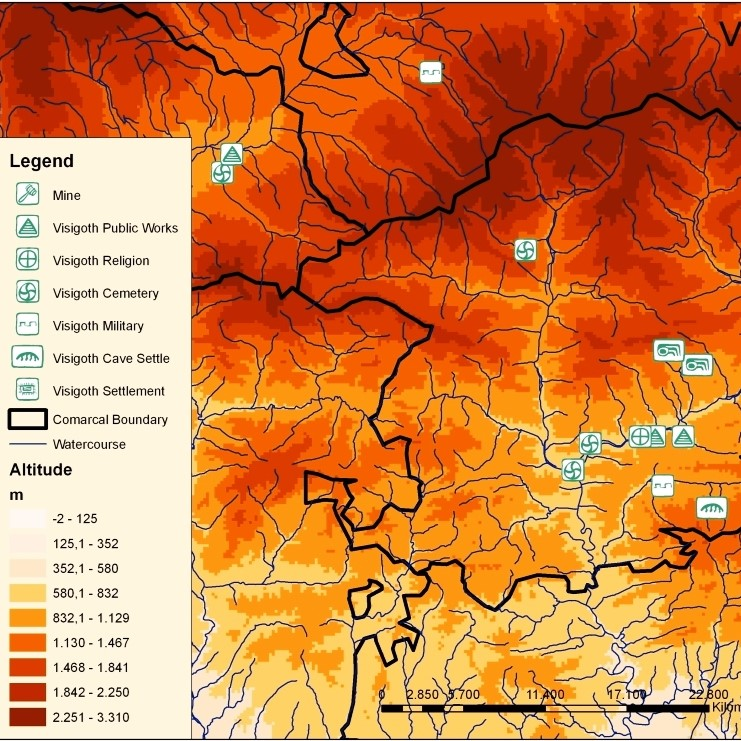
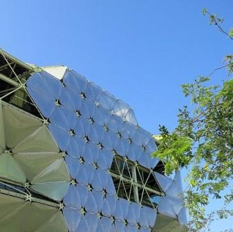
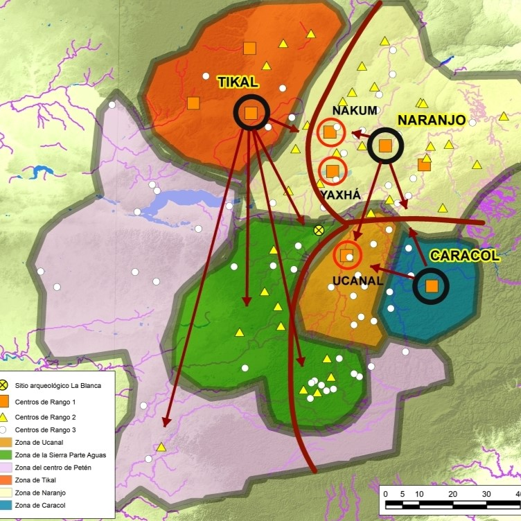

Projects
Past and ongoing endeavours, drafts and ideas for future initiatives

Landscape Archaeology of the Pyrenean Highlands
The Ripolles District during the Late Antiquty (4th - 9th AD
centuries)
- GIS Technologies
- Environmental and Land Management GIS Applications
- Dissertation on Urban Strategy Analysis

IT Academy - Cibernarium, BCNActiva
Developer
Program
- Git, Linux, SQL, MySQL, PhpMyAdmin
- Backend with Java and Maven
- Basic Frontend skills (HTML, CSS, JS)

Landscape and Urbanism at the Maya Lowlands
The Mopan river valley during the Late Classic Maya Period
- Specialty in GIS
- Land Survey Techniques
- British Iron Age and Roman Landscapes
- GPS and Remote Sensing
- Dissertation on The Landscape of Iberian Iron Age

Universitat de València, Spain
BA in
History
- Specialty in Archaeology
- Ancient Mediterranean Cultures
- Medieval History
- Russian Language